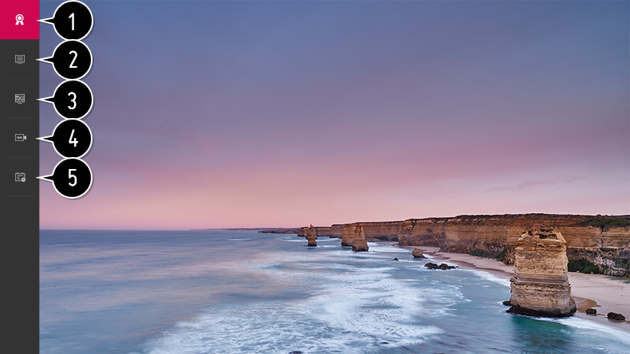

Uso de Live Menu
Puede utilizar las funciones más relevantes de forma sencilla mientras ve un programa de TV.
- Pulse el botón del mando a distancia. Seleccione TV en la pantalla de Inicio.
-
Mueva el puntero del mando a distancia Mágico a la parte izquierda de la pantalla de la TV.
Puede mostrarse pulsando el botón del mando a distancia, incluso cuando no esté viendo ninguna retransmisión.

- Recomendados / EN CURSO AHORA : Obtener recomendaciones de programas.
- Canales : Permite ver una lista con el contenido retransmitido en ese momento.
-
Guía de TV
:
Puede ver cada uno de los programas y su programación.
Para ver los detalles, Disfrutar la TV en vivo Guía de TV en Guía del usuario. -
Grabaciones
:
Puede revisar las grabaciones almacenadas en el dispositivo de almacenamiento y reproducirlas.
Para ver los detalles, Disfrutar la TV en vivo Reproducción de programas de TV grabados en Guía del usuario. -
Programador
:
Puede introducir la fecha y hora de un programa para programar su visualización o grabación a la hora establecida.
Para ver los detalles, Disfrutar la TV en vivo Programador en Guía del usuario.
Los canales mostrados en la lista de canales son una configuración de canales proporcionada por el proveedor de servicios de retransmisión. Por tanto, si el proveedor de servicios de retransmisión ha cambiado su configuración de canales sin previo aviso, los canales que se muestren en lista de canales pueden diferir con respecto a los canales de TV reales.
Debido a que información del canal mostrada en la lista de canales incluye información proporcionada por proveedores de la Guía electrónica de programación (EPG), puede diferir con respecto a los canales de TV reales.
Para recibir servicios de recomendaciones adecuadas, debe configurar la red, la región y la sintonización automática.
Los elementos configurables varían según el modelo.